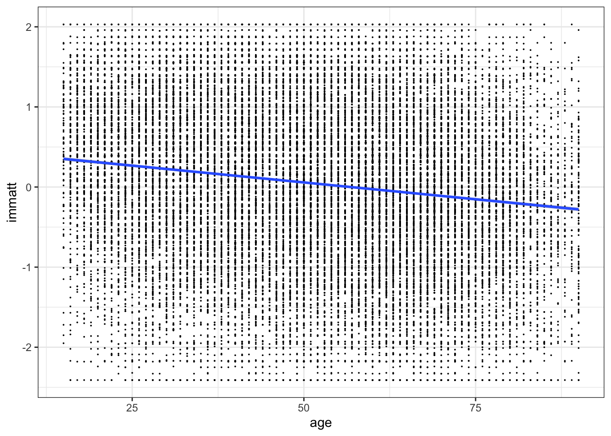

library(fixest)This lesson covers the following topics:
- The basic form of the simple linear regression model (bivariate regression).
- How we can mathematically estimate the slope and intercept of the best-fit line using the Ordinary Least Squares Estimator.
- How we can interpret the OLS estimates as the relationships between two variables.
- How we can describe the goodness of fit with the R-squared metric.
- Why OLS is also the best approximation of the conditional expectation function.
1.4.1: The Simple Linear Regression Model
In 1.3.6, we established that we care about the magnitude of the relationship between two variables x and y. One way we can measure the magnitude is through the slope of a best-fit linear line.
- This is because the slope in a linear equation y=mx+b shows how much y changes for every on unit increase in x.
We can formalise this with the Linear Regression Model:
Definition: Simple Linear Regression
The simple linear regression model takes the following form.
y_i = \beta_0 + \beta_1 x_i + u_i
- Where we have n number of observations in our data, i being any one of them, and each observation has an x and y value (x_i, y_i).
- Where \beta_0 (intercept) and \beta_1 (slope) are coefficients of the model that need to be estimated (since they will differ in value between different samples and data).
- Where \beta_1 (slope) describes the association of x and y.
- Where u_i is the error term (see below for more details)
The simple linear regression model is also called the bivariate regression model, since there are two variables y and x.
You might notice an extra term at the end of the equation u_i. This is called the error term. Why does it exist?
- Well, not all of our data points (x_i, y_i) are going to be exactly on the straight line of best fit.
- The term u_i represents the distance (in terms of units of y) of that actual point from the best-fit line.
Mathematically, we can solve for the value of u_i for each observation of u_i by solving for it from the regression equation:
\begin{split} y_i & = \beta_0 + \beta_1x_i + u_i \\ - u_i & = -y_i + \beta_0 + \beta_1 x_i \\ u_i & = y_i - \beta_0 - \beta_1 x_i \end{split}
This might not be too intuitive. An easier way is to visualise it with a figure. Take the figure below - not all points are on the best-fit line. u_i represents the distance of points from the best fit line:

The error term, in social science terms, is the effect of anything else on y excluding x (which is already included in our linear equation).
- For example, if x is age and y is income, you might have a relationship between the two variables.
- However, this is not a perfect linear relationship - not all points will be on the best fit line. This is because there are other factors that affect y (income), including education, bargaining ability, location of work, and so on. It could also just be random variation - after all, some people’s incomes y are a result of just pure luck.
- Every other factor that affects y, but is not x, is encompassed in this error term u_i.
For the simple linear regression model, the average error u_i across all observations i, is 0. Mathematically, E(u_i) = 0. We will discuss this in the next lesson.
1.4.2: Fitted Values and Best-Fit Lines
We have discussed the form a simple linear regression takes: y_i = \beta_0 + \beta_1 x_i + u_i.
However, that is not the best-fit line: we still need to estimate the coefficients \beta_0 (intercept) and \beta_1 (slope) in order to create a best-fit line.
- The estimates of \beta_0 and \beta_1 that we obtain will be denoted with a hat ^: \hat\beta_0 and \hat\beta_1.
- The estimates of \beta_0 and \beta_1 will vary depending on the data we have.
We will discuss the estimation process in a short bit. But first, let us explore why we care about the estimates of our coefficients.
Once we have obtained our estimates of the coefficients, we will have a best-fit line, also called a fitted-values model.
Definition: Fitted Values
The fitted values are obtained after estimating \beta_0 and \beta_1. The equation takes the following form:
\hat{y}_i = \hat\beta_0 + \hat\beta_1x_i
- Where \hat{y} are the predicted values of y based on our best-fit line.
- Where \hat\beta_0 and \hat\beta_1 are our estimates for the true coefficients \beta_0 and \beta_1.
- Note that the error term u_i disappears. This is because the average value of u_i is E(u_i) = 0, so we do not need to include the term.
What do the fitted values allow us to do?
The estimate \hat\beta_1 is the estimate of the slope of the linear equation.
- That means \hat\beta_1 explains the amount of change in y, given a one unit increase in x. If we are interested in describing the relationship between two variables, \hat\beta_1 is what we will focus on.
\hat y is the predicted values of y, which means we can also use the fitted values to make predictions. Just plug in values of x, and the fitted values equation will output a prediction \hat y.
- While this course does not focus on prediction, the subsequent course on Applied Machine Learning will dive much more into this topic.
For example, let us say x is age, and y is income. Given any x (age) value, we can predict the income value by plugging in x. If we are interested in the income of a 30 year old, we would plug in 30 for x:
\hat y_i = \hat\beta_0 + \hat\beta_1(30)
Of course, to actually calculate the \hat y, we will need to estimate \hat \beta_0 and \hat\beta_1.
1.4.3: Sum of Squared Errors
As I mentioned previously, to get a best-fit line, we need some way to estimate \beta_0 (intercept) and \beta_1 (slope) to get \hat\beta_0 and \hat\beta_1.
The question is, how do we do this? For example, which best-fit line is better below - red, orange, or blue?

To fit a best-fit line, we obviously want the line to fit the data well - i.e. have minimal errors compared to the actual data.
- What is an error? Recall that our original values of y from the data for any observation i are y_i.
- We also have predictions for the value of any observation from our best-fit line, labelled \hat y_i
- Thus naturally, the error is how far away our prediction \hat y_i is from the true observed value y_i.
One way we can fit an accurate line is to find the best-fit line that minimises the sum of squared errors (SSE).
Definition: Sum of Squared Errors
The sum of squared errors (SSE) is as follows:
\begin{split} SSE & = \sum\limits_{i=1}^n (y_i - \hat y_i)^2 \\ & = \sum\limits_{i=1}^n (y_i - \hat\beta_0 - \hat\beta_1 x_i)^2 \end{split}
- The sum of squared errors is exactly as it sounds. Find the error, the distance between the actual y_i and predicted \hat y, which is y_i - \hat y, then square that error (y_i - \hat y_i)^2, then sum up for all observations i in the data.
- We get the second equation by substituting in the fitted values model (discussed in the previous section), where \hat{y} = \hat\beta_0 + \hat\beta_1x_i.
More inuitively, the errors of a best-fit line are highlighted in red. We will square each error, then sum all the errors up, to get the sum of squared errors for that best-fit line:

Why do we want to square the errors?
- This is because we do not care about the direction of errors - only the size of the errors.
- For example, the error in the above figure d1 is positive, while d2 is negative. If we sum them together, those almost cancel out, giving us an error of near zero. However, we do not want them to be cancelled out - we ace about the sizes of the errors.
- Thus, by squaring the errors, we make all errors positive, thus only focusing on the size of the errors, not their positive/negative direction.
A common question is why we square the errors, and don’t use absolute values of the errors. There are a few reasons this is the case.
- As we will see in the next section, minimising functions relies on finding the derivative of the function. An absolute value function is not differentiable at its vertex, making it difficult to minimise (as we are trying to minimise the errors).
- The least-squares method has several desirable properties for inference that we will cover mostly in the next lesson.
1.4.4: Mathematics of the Ordinary Least Squares Estimator
The Ordinary Least Squares (OLS) Estimator estimates the coefficients \beta_0 and \beta_1 by finding the values of \hat\beta_0 and \hat\beta_1 that result in the line with the smallest sum of squared errors (as discussed in the last section).
We can describe the goal of OLS in a more mathematical way:
Definition: Ordinary Least Squares (OLS) Estimator
The goal of the Ordinary Least Squares (OLS) Estimator is to find the values of \beta_0 and \beta_1 that make the following statement true:
\begin{split} (\hat{\beta}_0, \hat{\beta}_1) & = \min\limits_{\hat{\beta}_0, \hat{\beta}_1} \sum\limits_{i=1}^n (y_i - \hat{\beta}_0 - \hat{\beta}_1x_i)^2 \\ & =\min\limits_{\hat{\beta_0}, \hat{\beta}_1} S(\hat{\beta}_0, \hat{\beta}_1) \end{split}
Where function S is the sum of squared errors.
How do we minimise S (the function of the sum of squared errors)?
- From calculus, we know that a minimum/maximum of a function is where the derivative of the function is equal to 0.
Thus, let us find the partial derivative of the function S in respect to both \hat\beta_0 and \hat\beta_1, and set them equal to 0. This is also called the first-order conditions.
First Order Conditions
First, let us find the partial derivative of S in respect to \hat\beta_0:
\frac{\partial S(\hat{\beta}_0, \hat{\beta}_1)}{\partial \hat{\beta}_0} = \frac{\partial }{\partial \hat{\beta}_0} \left[ \sum\limits_{i=1}^n (y_i - \hat{\beta}_0 - \hat{\beta}_1x_i)^2 \right]
First, ignore the summation. The partial derivative of the internal section, using chain rule, is the following:
\frac{\partial}{\partial \hat{\beta}_0} \left[ (y_i - \hat{\beta}_0 - \hat{\beta}_1 x_i)^2 \right] = -2(y_i - \hat{\beta}_0 - \hat{\beta}_1 x_i)
But how do we deal with the summation? We know that there is the sum rule of derivatives [f(x) + g(x)]' = f'(x) + g'(x). Thus, we know we just sum up the derivatives to get the derivative:
\begin{split} \frac{\partial S(\hat{\beta}_0, \hat{\beta}_1)}{\partial \hat{\beta}_0} & = \sum\limits_{-i=1}^n \left[ -2(y_i - \hat{\beta}_0 - \hat{\beta}_1 x_i) \right] \\ & = -2 \sum\limits_{i=1}^n (y_i - \hat{\beta}_0 - \hat{\beta}_1 x_i) \end{split}
To find the value of \hat\beta_0 that minimises S, we set the derivative equal to 0. We can ignore the -2, since if the summation is equal to 0, the whole derivative will equal 0. Thus, the first order condition is:
\sum\limits_{i=1}^n (y_i - \hat{\beta}_0 - \hat{\beta}_1 x_i) = 0
Now, let us do the same for \hat\beta_1. Using the same steps as before
\begin{split} \frac{\partial S(\hat{\beta}_0, \hat{\beta}_1)}{\partial \hat{\beta}_1} & = \sum\limits_{i=1}^n \left[ -2x_i(y_i - \hat{\beta}_0 - \hat{\beta}_1 x_i) \right] \\ & = -2 \sum\limits_{i=1}^n x_i(y_i - \hat{\beta}_0 - \hat{\beta}_1 x_i) \end{split}
The first order condition for \hat\beta_1 will be (again, ignoring the -2 for the same reason as before):
\sum\limits_{i=1}^n x_i(y_i - \hat{\beta}_0 - \hat{\beta}_1 x_i) = 0
Definition: First Order Conditions of OLS
Thus, the first order conditions of OLS are:
\begin{split} & \sum\limits_{i=1}^n (y_i - \hat{\beta}_0 - \hat{\beta}_1 x_i) = 0 \\ & \sum\limits_{i=1}^n x_i (y_i - \hat{\beta}_0 - \hat{\beta}_1 x_i) = 0 \end{split}
Solving the System of Equations
We now have our two first-order conditions. Now, we basically have a 2-equation system of equations, with 2 variables.
- We can solve this through substitution - in the first equation, solve for \hat\beta_0 in terms of \hat\beta_1.
- Then, plug in \hat\beta_0 in terms of \hat\beta_1 into the second equation, thus making that a one-variable equation. We can solve that equation for \hat\beta_1, then find \hat\beta_0.
First, let us solve the first equation for \hat\beta_0 in terms of \hat\beta_1:
\begin{split}\sum\limits_{i=1}^n (y_i - \hat{\beta}_0 - \hat{\beta}_1 x_i) & = 0 \\ \sum\limits_{i=1}^n y_i - n \hat{\beta}_0 - \hat{\beta}_1 \sum\limits_{i=1}^n x_i & = 0 \\ -n\hat{\beta}_0 &= -\sum\limits_{i=1}^n y_i + \hat{\beta}_1\sum\limits_{i=1}^nx_i \\ \hat{\beta}_0 & = \frac{1}{n} \sum\limits_{i=1}^n y_i - \frac{1}{n}\hat{\beta}_1 \sum\limits_{i=1}^n x_i \\ & = \bar{y} - \hat{\beta}_1 \bar{x} \end{split}
Now, let us substitute our calculated \hat{\beta}_0 = \bar{y} - \hat{\beta}_1 \bar{x} into the \hat{\beta}_1 condition and solve for \hat{\beta}_1:
\begin{split} 0 & =\sum\limits_{i=1}^n x_i (y_i - \hat{\beta}_0 - \hat{\beta}_1 x_i) \\ & = \sum\limits_{i=1}^n \left[ x_i(y_i - [\bar{y} - \hat{\beta}_1\bar{x}] - \hat{\beta}_1x_i) \right] \\ & = \sum\limits_{i=1}^n \left[ x_i(y_i - \bar{y} - \hat{\beta}_1 (x_i - \bar{x})) \right] \\ & = \sum\limits_{i=1}^n \left[ x_i(y_i - \bar{y}) - x_i \hat{\beta}_1(x_i - \bar{x}) \right] \\ & = \sum\limits_{i=1}^n x_i (y_i - \bar{y}) - \hat{\beta}_1 \sum\limits_{i=1}^nx_i (x_i - \bar{x}) \end{split}
Useful Properties of Summation
Before we finish, here are a few key properties of summation
Property 1:
\sum\limits_{i=1}^n (x_i - \bar{x}) = 0
- This is because we can expand the left to \sum x_i - \sum \bar x.
- Then, we know \sum x_i = \sum \bar x (by the formula for mean), so \sum x_i - \sum \bar x = 0.
Property 2:
\sum\limits_{i=1}^n x_i(y_i - \bar{y}) = \sum\limits_{i=1}^n(x_i - \bar{x}) (y_i - \bar{y})
- This is because on the right side can expand to \sum [x_i(y_i - \bar y) - \bar x (y_i - \bar y)].
- Then, split into \sum x_i (y_i - \bar y) - \bar x \sum (y_i - \bar y).
- We know that by property 1 (which applies to any variable), \sum (y_i - \bar y) = 0. Thus, the right side disappears, and we are left with \sum x_i (y_i - \bar y).
Property 3:
\sum\limits_{i=1}^n x_i(x_i - \bar{x}) = \sum\limits_{i=1}^n(x_i - \bar{x})^2
- Start by expanding right side to \sum [ x_i ( x_i - \bar x) - \bar x (x_i - \bar x)]
- Which splits into \sum x_i (x_i - \bar x) - \bar x \sum (x_i - \bar x)
- By the first property, we know \sum x_i - \bar x = 0, so we are only left with \sum x_i (x_i - \bar x)
Knowing these properties of summation, we can transform what we had before:
\begin{split} 0 & = \sum\limits_{i=1}^n x_i (y_i - \bar{y}) - \hat{\beta}_1 \sum\limits_{i=1}^nx_i (x_i - \bar{x}) \\ 0 & = \sum\limits_{i=1}^n(x_i - \bar{x})(y_i - \bar{y}) - \hat{\beta}_1 \sum\limits_{i=1}^n (x_i - \bar{x})^2 \\ \hat{\beta}_1 \sum\limits_{i=1}^n (x_i - \bar{x})^2 & = \sum\limits_{i=1}^n(x_i - \bar{x})(y_i - \bar{y}) \\ \hat{\beta}_1 & = \frac{\sum_{i=1}^n (x_i - \bar{x})(y_i - \bar{y})}{\sum_{i=1}^n(x_i - \bar{x})^2} \end{split}
Note that the numerator is equivalent to the formula of covariance Cov(x,y), and the denominator is equal to the variance Var(x).
Definition: OLS Estimate of Coefficient
Thus, the OLS estimate \hat\beta_1 (slope) of the linear regression model is:
\hat{\beta}_1 = \frac{\sum_{i=1}^n (x_i - \bar{x})(y_i - \bar{y})}{\sum_{i=1}^n(x_i - \bar{x})^2} = \frac{Cov(x, y)}{Var(x)}
This is the expected change in y given a one unit increase in x.
- Remember, this is the relationship between x and y, not the causal effect.
Of course, we still need to find \hat\beta_0 (the slope). We found that \hat\beta_0 = \bar{y} - \hat{\beta}_1 \bar{x} earlier, so we just plug our solution of \hat\beta_1 in.
And now, we have our estimates \hat\beta_0 and \hat\beta_1, and thus we now have a best-fit line and an estimate of the relationship between x and y.
Note: in the next lesson, we will discuss if the OLS estimator is a good estimator or not. For now, we just care about the mechanics of the estimator.
1.4.5: Interpretation and Standardisation
We now have estimated \hat\beta_0 and \hat\beta_1. But what do these actually mean in the context of the relationship between x and y?
- Let us start with \hat\beta_1, which is the slope, the more important of the two coefficients.
Interpretation of \hat\beta_1
We know that in a linear fitted-values model, \hat y_i = \hat\beta_0 + \hat\beta_1 x_i, the coefficient \beta_1 is the slope.
- And the slope is the change in y given a one unit increase in x.
Using this knowledge, we can interpret estimate \hat\beta_1.
Interpretation of \hat\beta_1
When x increases by one unit, there is an expected \hat{\beta}_1 unit change in y.
Warning!
Note how I have been using the word relationship, not causal effect.
Causality is not established through estimators, it is established through a strong experimental design (which we will cover in part II of the course).
Note that this interpretation of \hat\beta_1 only applies to continuous x variables and continuous/ordinal y variables. We will discuss interpretation with categorical/binary variables in lesson 1.9.
Interpretation of \hat\beta_0
We know that in a linear fitted-values model, \hat y_i = \hat\beta_0 + \hat\beta_1 x_i, the coefficient \beta_0 is the y-intercept.
- And the y-intercept is the change value of y given x=0.
We can prove this mathematically:
\begin{split} \hat y_{i, \ x_i = 0} & = \hat\beta_0 + \hat\beta_1 x_i \\ & = \hat\beta_0 + \hat\beta_1(0) \\ & = \hat\beta_0 \end{split}
Thus, knowing this, we can interpret \hat\beta_0.
Interpretation of \hat\beta_0
When x=0, the expected value of y is \hat{\beta}_0
Standardising \beta_1 in Terms of Standard Deviations
Sometimes, it is hard to understand what changes in y and x mean in terms of units. For example, if we are measuring “democracy”, what does a 5 unit change in democracy mean? Is that a lot?
We can add more relevant detail by expressing the change of y and x in standard deviations.
How do we calculate this? Well, let us solve for the change in \hat{y}_i/\sigma_y given x_i = x and x = x + \sigma_X. This will tell us how much \hat{y} changes by given a increase of one standard deviation in x:
\begin{split} \frac{\hat y_{i, \ x_i = x + \sigma_x}}{\sigma_y} - \frac{\hat y_{i, \ x_i = x}}{\sigma_y} & = \frac{\hat\beta_0 + \hat\beta_1 x_i}{\sigma_y} - \frac{\hat\beta_0 + \hat\beta_1 x_i}{\sigma_y} \\ & = \frac{\hat\beta_0 + \hat\beta_1 (x+\sigma_x) - (\hat\beta_0 + \hat\beta_1 (x))}{\sigma_y} \\ & = \frac{\hat\beta_0 - \hat\beta_0 + \hat\beta_1x - \hat\beta_1x+\hat\beta_1\sigma_x}{\sigma_y} \\ & = \frac{\hat\beta_1 \sigma_x}{\sigma_y} \end{split}
Interpretation in Terms of Standard Deviation
For a one-std. deviation increase in x, there is an expected \hat{\beta}_1 \sigma_x / \sigma_y-std. deviation change in Y.
Warning!
Note how I have been using the word relationship, not causal effect.
Causality is not established through estimators, it is established through a strong experimental design (which we will cover in part II of the course).
1.4.6: R-Squared and Goodness of Fit
For each observation, we know that the actual y_i value is the predicted \hat y_i plus the residual term \hat u_i. Thus:
y_i = \hat y_i + \hat u_i
Now, let us define these three concepts: the total sum of squares (SST), explained sum of squares (SSE), and residual sum of squares (SSR):
\begin{split} & SST = \sum\limits_{i=1}^n (y_i - \bar y)^2 \\ & SSE = \sum\limits_{i=1}^n (\hat y_i - \bar y)^2 \\ & SSR = \sum\limits_{i=1}^n (\hat u_i)^2 \end{split}
- The SST explains the total amount of variation in y
- The SSE is the amount of variation in y explained by our model
- The SSR is the amount of variation in y not explained by our model
Let us look at the total sum of squares (SST). We can manipulate it as follows:
\begin{split} SST & = \sum\limits_{i=1}^n (y_i - \bar y)^2 \\ & = \sum\limits_{i=1}^n(y_i - \hat y_i+ \hat y_i - \bar y)^2 \\ & = \sum\limits_{i=1}^n((y_i - \hat y_i)+ \hat y_i - \bar y)^2 \\ & = \sum\limits_{i=1}^n[\hat u_i + \hat y_i - \bar y]^2 \\ & = \sum\limits_{i=1}^n[\hat u_i^2 + \hat u_i \hat y_i - \hat u_i \bar y + \hat y_i \hat u_i + \hat y_i^2 - \hat y_i \bar y-\bar y \hat u_i -\bar y \hat y_i+\hat y^2_i] \\ & = \sum\limits_{i=1}^n[ \hat u_i^2 + 2 \hat u_i \hat y_i+ \hat y_i^2 - 2 \hat u_i \bar y - 2 \hat y_i \bar y + \bar y ^2] \end{split}
And since we know \sum \hat y_i \hat u_i = 0, we can further simplify to:
\begin{split} SST & = \sum\limits_{i=1}^n[ \hat u_i^2 + \hat y_i^2 - 2 \hat u_i \bar y - 2 \hat y_i \bar y + \bar y ^2] \\ & = \sum\limits_{i=1}^n[\hat u_i^2 + (\hat y_i - \bar y)^2]\\ & = \sum\limits_{i=1}^n \hat u_i^2 + \sum\limits_{i=1}^n(\hat y_i - \bar y)^2 \\ & = SSE + SSR \end{split}
This makes sense: After all, SSE is the squared errors explained by the model, and SSR is the residual (non-explained) parts of the model, so together, they should be equal to the total sum of squares.
Using these properties, we can create a statistic which explains how well our model explains the variation in y. This statistic is called R^2.
Definition: R-Squared
The R-squared metric is a metric describing how good of a fit our model is. Mathematically:
R^2 = \frac{SSE}{SST} = 1 - \frac{SSR}{SST}
What does this R^2 value mean?
- Well SSE is the amount of variation in y explained by our model, and SST is the total amount of variation in y.
- Thus, R^2 is the proportion of variation in y explained by our model.
R^2 is always between 0 and 1:
- This is because it is a proportion, so and 0 ≤ SSE ≤ SST, so this must be true.
- Values closer to 1 mean our model explains the variance in y more
- Values closer to 0 mean our model explains less of the variance in y.
However, be careful when using R^2. Just because it is high, does not mean we can infer anything from it.
Extra notes about R^2:
- R^2 is also equal to the correlation coefficient between y_i and \hat y_i.
- In simple linear regression, R^2 is also equal to the square of the correlation coefficient r between x and y.
Implementation in R
Regression Estimation
To estimate a regression, we can use the feols() function from the package fixest, or we can use the base-R function lm().
- The syntax is the same for both (at least for simple linear regression).
- The feols() function does have a few advantages for techniques that will be discussed later, especially when it comes to causal inference and econometrics.
For the feols() function, we will need the fixest package. Make sure to install it if you have not previously (google how to install R-packages if needed).
Syntax:
For the feols() function, the syntax is as follows:
model <- feols(y ~ x, data = mydata)
summary(model)- Replace model with any name you want to store your regression model in.
- Replace y with your outcome variable name, and x with your explanatory variable name.
- Replace mydata with the name of your dataframe.
The lm() function has the exact same syntax for simple linear regression, except that we replace feols() with lm():
model <- lm(y ~ x, data = mydata)
summary(model)Example:
Let us run a regression with outcome variable immatt (attitude towards immigrants), explanatory variable age, from the dataframe called dta:
my_model <- feols(immatt ~ age, data = dta)
summary(my_model)OLS estimation, Dep. Var.: immatt
Observations: 33,706
Standard-errors: IID
Estimate Std. Error t value Pr(>|t|)
(Intercept) 0.477238 0.015811 30.1830 < 2.2e-16 ***
age -0.008401 0.000291 -28.8857 < 2.2e-16 ***
---
Signif. codes: 0 '***' 0.001 '**' 0.01 '*' 0.05 '.' 0.1 ' ' 1
RMSE: 0.961932 Adj. R2: 0.024129We can see in the estimate column, we get our intercept estimate \hat\beta_0, and our explanatory variable coefficient estimate \hat\beta_1.
The result is similar with lm():
my_model <- lm(immatt ~ age, data = dta)
summary(my_model)
Call:
lm(formula = immatt ~ age, data = dta)
Residuals:
Min 1Q Median 3Q Max
-2.75282 -0.61715 0.07398 0.66244 2.30046
Coefficients:
Estimate Std. Error t value Pr(>|t|)
(Intercept) 0.4772381 0.0158115 30.18 <2e-16 ***
age -0.0084011 0.0002908 -28.89 <2e-16 ***
---
Signif. codes: 0 '***' 0.001 '**' 0.01 '*' 0.05 '.' 0.1 ' ' 1
Residual standard error: 0.962 on 33704 degrees of freedom
Multiple R-squared: 0.02416, Adjusted R-squared: 0.02413
F-statistic: 834.4 on 1 and 33704 DF, p-value: < 2.2e-16Plotting Relationships Graphically
We can plot relationships between two variables using a scatterplot. For this, we will need the tidyverse package. Make sure to install it if you have not previously (google how to install R-packages if needed).
library(tidyverse)Syntax:
We can create scatterplots with the ggplot() function as follows:
ggplot(mydata, aes(x = x_variable, y = y_variable)) +
geom_point() +
geom_smooth(method = lm)- Replace mydata with the name of your dataframe that contains your variables.
- Replace x_variable with the name of the variable you want displayed on the x axis.
- Replace y_variable with the name of the variable you want displayed on the y axis.
Note: the geom_point() part plots the points on the scatterplot, and the geom_smooth() part plots the best-fit line (OLS estimation).
- The method = lm within the geom_smooth() tells us to use OLS estimation in the best-fit line.
Example:
Let us do a scatterplot on the variable age and the variable immatt (immigration attitude), both variables being contained in the dataframe named dta:
- I added theme_bw(), which is a theme in ggplot (see appendix B).
- I added the argument size=0, as this allows us to control for the size of the dots.
ggplot(dta, aes(x = age, y = immatt)) +
geom_point(size = 0) +
geom_smooth(method = lm) +
theme_bw()`geom_smooth()` using formula = 'y ~ x'
Obviously, there are way too many observations in this scatterplot, but this will look nicer for a plot with less observations.